Guide de l’application Mon Éco Conso
Tout ce qu’il faut pour installer l’application sur votre smartphone et la faire fonctionner pendant l’étude. Gardez cette page, elle reste disponible à tout moment.
Commencez par la vidéo
Elle montre toute l’installation en quelques minutes. Les explications détaillées, étape par étape, se trouvent juste en dessous.
Le guide étape par étape
-
Télécharger l’application
Depuis votre téléphone, appuyez sur le bouton ci-dessous :
Télécharger l’applicationSi vous lisez cette page sur un ordinateur, scannez plutôt ce QR code avec votre téléphone :
L’application n’est pas sur le Play Store : votre téléphone va donc afficher un ou plusieurs messages d’avertissement. C’est normal. Suivez les indications ci-dessous selon ce qui s’affiche.
« Fichier potentiellement dangereux »
Appuyez sur Télécharger quand même.
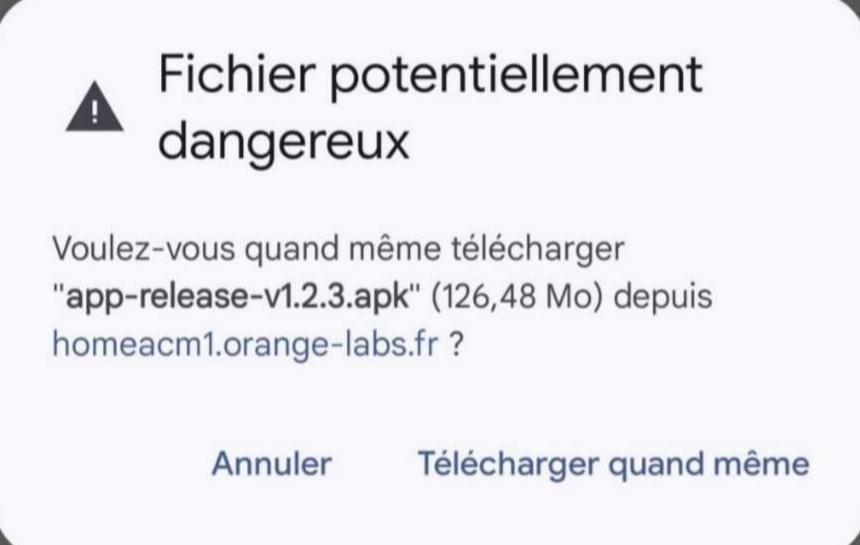
« L’installation d’applis inconnues n’est pas autorisée »
Appuyez sur Paramètres, puis activez l’interrupteur à côté de votre navigateur (par exemple Chrome). Revenez ensuite en arrière pour poursuivre l’installation.
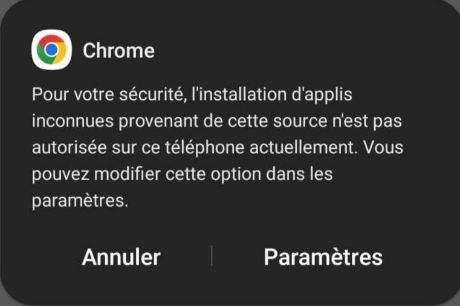
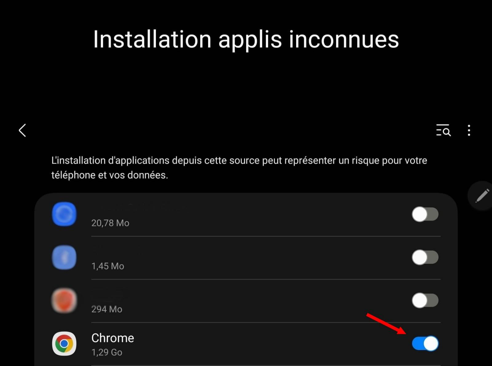
Sur un téléphone Xiaomi : « Danger » ou « Application risquée »
Sur l’écran « Danger », cochez la case « Je suis conscient des risques… », puis appuyez sur OK.
Si l’écran « Application risquée » apparaît ensuite, appuyez sur Sauter pour continuer l’installation.
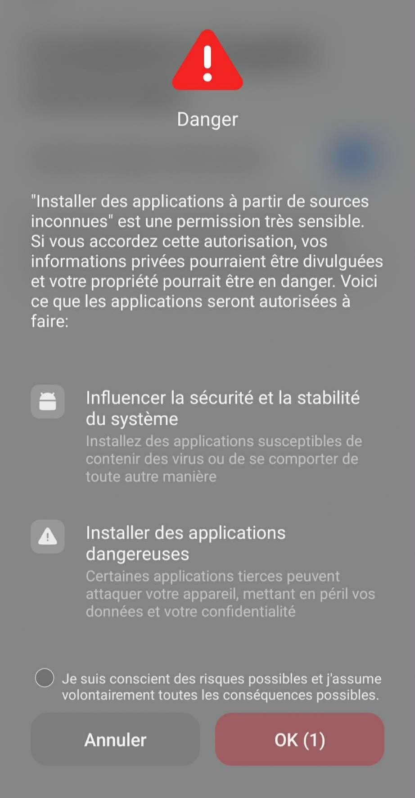
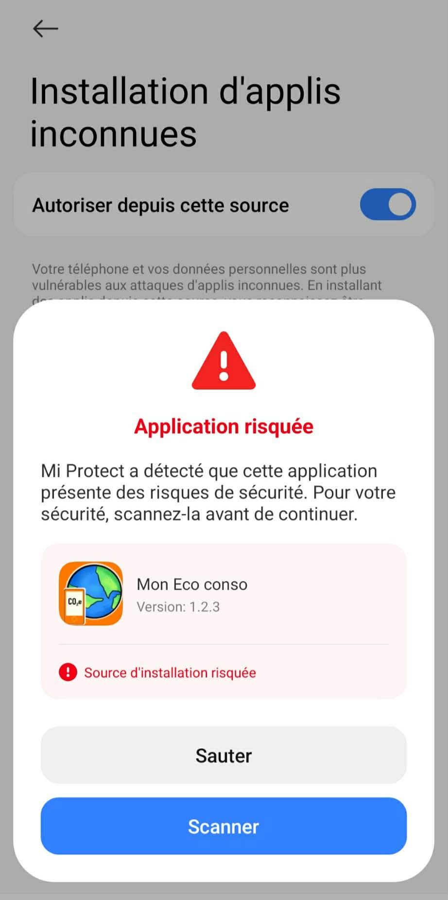
-
Installer puis ouvrir l’application
Appuyez sur Installer et attendez la fin de l’installation. Appuyez ensuite sur Ouvrir.
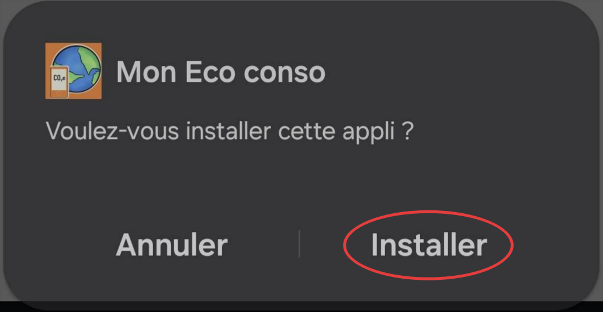
Appuyez sur Installer 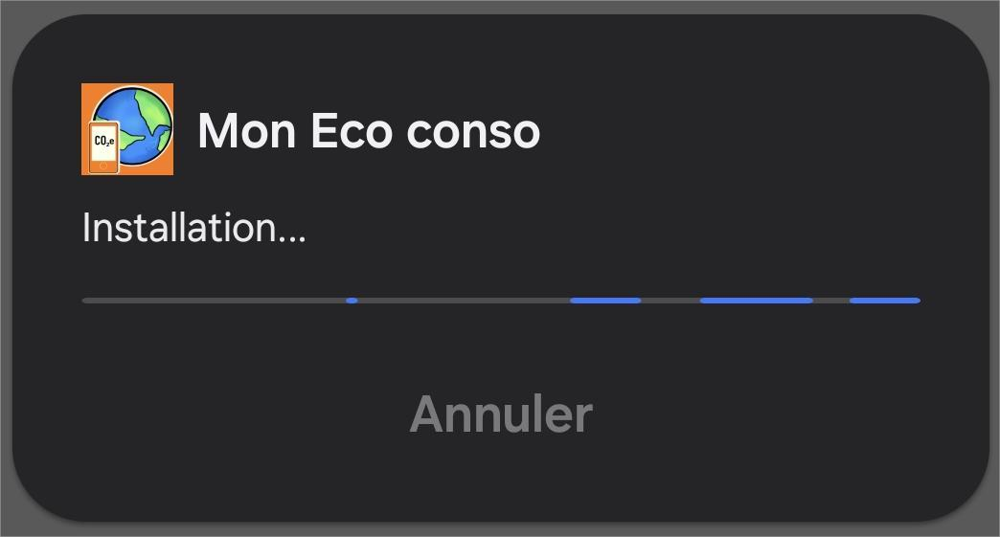
Patientez 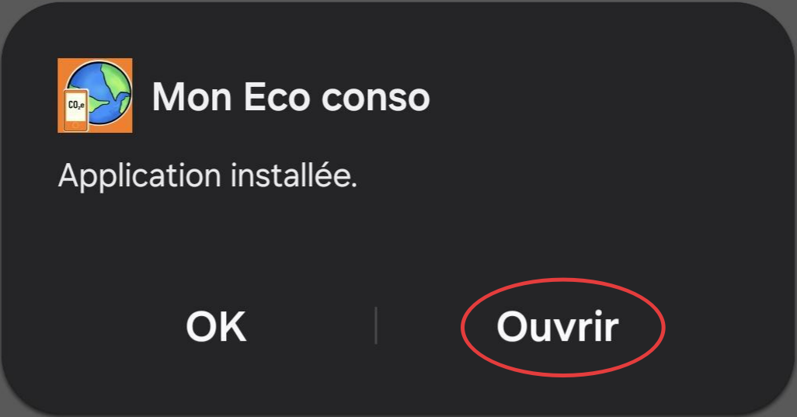
Appuyez sur Ouvrir -
Autoriser l’accès aux statistiques d’utilisation
Au premier lancement, l’application a besoin d’accéder aux statistiques d’utilisation pour mesurer votre consommation de données (Wi-Fi et mobile).
Aucune donnée personnelle, aucun message et aucun fichier n’est collecté.
Appuyez sur OK. Dans la liste qui s’ouvre, trouvez Mon Eco conso et activez l’interrupteur. Revenez ensuite à l’application.
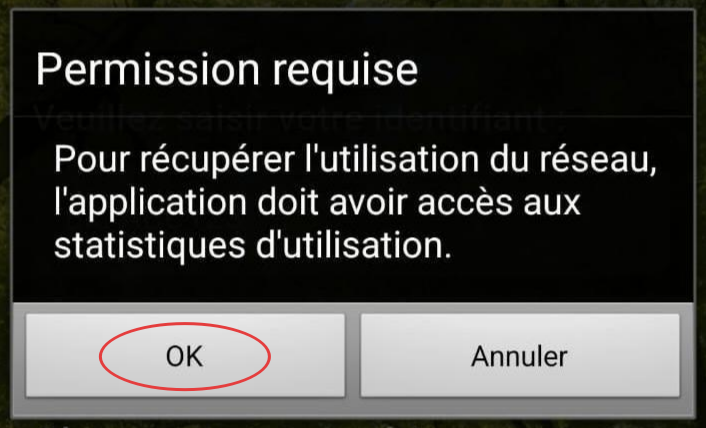
Appuyez sur OK 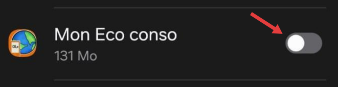
Interrupteur désactivé 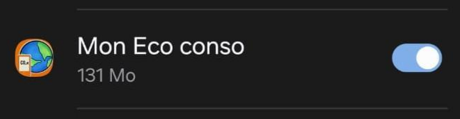
Interrupteur activé « L’appli s’est vu refuser l’accès »
Certaines versions d’Android bloquent cette autorisation pour les applications installées hors du Play Store. Pour la débloquer :
Appuyez sur Fermer. Ouvrez les Paramètres du téléphone, puis Applications, puis Mon Eco conso. Appuyez sur les trois points en haut à droite et choisissez Autoriser les paramètres restreints. Revenez ensuite dans l’application et activez à nouveau l’interrupteur.
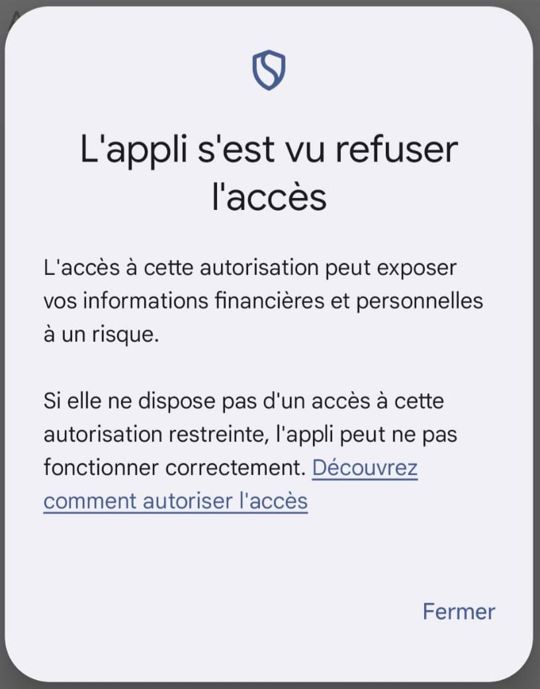
-
Saisir votre identifiant
L’application vous demande ensuite votre identifiant. Entrez-le soigneusement, puis appuyez sur Valider pour activer votre participation.
Utilisez l’identifiant personnel qui vous a été communiqué par l’équipe de recherche.
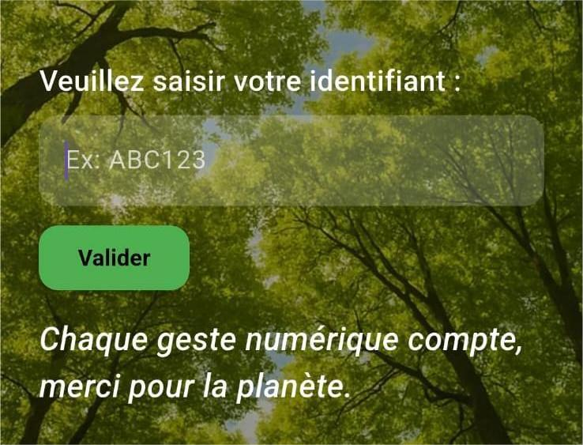
-
Vérifier que tout fonctionne
Une fois l’identifiant validé, l’application commence à enregistrer vos données de consommation. Elle fonctionne en arrière-plan : vous n’avez rien d’autre à faire.
Utiliser l’application pendant l’étude
Pendant la première semaine, vous n’avez rien de particulier à faire. Vous pouvez explorer l’application, regarder les informations disponibles et vérifier qu’elle fonctionne correctement.
À la fin de cette première semaine, vous recevrez un e-mail qui annonce le début de l’expérimentation principale et donne les instructions détaillées pour la suite.
Pensez à garder l’application installée pendant toute la durée de l’étude.
Besoin d’aide ?
Si vous rencontrez un problème pendant l’installation ou l’utilisation, écrivez à l’équipe de recherche :